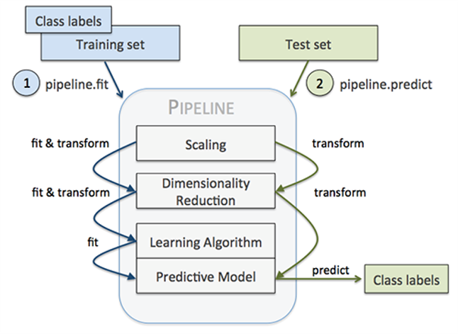

Data Pipelines#
import numpy as np
import pandas as pd
from sklearn.model_selection import train_test_split, cross_val_score, cross_validate
from sklearn.impute import SimpleImputer
from sklearn.preprocessing import StandardScaler, OneHotEncoder, FunctionTransformer
from sklearn.pipeline import Pipeline, make_pipeline, FeatureUnion
from sklearn.compose import ColumnTransformer
from sklearn.base import TransformerMixin, BaseEstimator
from sklearn.linear_model import LogisticRegression
import pickle
Pipeline#
Pipeline คือ ลำดับของ data processing step ที่ถูกรวมเข้าด้วยกัน มีองค์ประกอบ (component) หลักคือ transformer (ตัวแปลงข้อมูล)
Transformer มี method ที่สำคัญคือ
.fit= คำนวณ.transform= แปลงข้อมูลโดยใช้สิ่งที่คำนวณได้จาก.fit.fit_transform=.fit+.transform
Creating simple pipelines#
เราสามารถสร้าง pipeline โดยเอา transformer มาต่อกัน
ใช้ sklearn.pipeline.Pipeline หรือ sklearn.pipeline.make_pipeline (ใช้อันหลังจะเขียน code สั้นกว่า แต่ไม่สามารถตั้งชื่อ transformer ได้)
# Import data and drop duplicates
data = pd.read_csv('../data/India_air_quality_light.csv').drop_duplicates()
# Separate features (X) and target (y)
X, y = data.drop(columns="high_level"), data["high_level"]
# Drop row containing non-sense values
X = X.drop(X[(X['so2'] < 0) | (X['no2'] < 0) | (X['rainfall'] < 0)].index)
y = y[X.index]
# Train-test split
X_train, X_test, y_train, y_test = train_test_split(X, y, train_size=0.8)
X_train
| stn_code | state | location | type | so2 | no2 | date | rainfall | |
|---|---|---|---|---|---|---|---|---|
| 20006 | 212 | Uttar Pradesh | Kanpur | Residential | 12.0 | 19.00000 | 01/01/2004 | 66.903607 |
| 16352 | 267 | Maharashtra | Chandrapur | Residential | 17.0 | 22.00000 | 21/03/2013 | 72.273623 |
| 11725 | NaN | Kerala | Palakkad | Industrial | NaN | 26.41612 | 07/05/2006 | 65.058386 |
| 3415 | NaN | Uttar Pradesh | Ghaziabad | Industrial | 20.5 | 12.00000 | 30/03/2007 | 113.986407 |
| 2513 | 1 | Uttar Pradesh | Agra | Sensitive | 2.0 | 29.00000 | 08/10/2015 | 68.847968 |
| ... | ... | ... | ... | ... | ... | ... | ... | ... |
| 18219 | NaN | Maharashtra | Pune | Others | 19.8 | 45.20000 | 29/01/2008 | 91.165266 |
| 21960 | 369 | Uttar Pradesh | Ghaziabad | Industrial | 26.0 | 35.00000 | 15/09/2011 | 90.826964 |
| 7283 | 296 | Rajasthan | Jaipur | Residential | 5.0 | 35.00000 | 22/07/2011 | 85.113782 |
| 7945 | 757 | Andhra Pradesh | Rajahmundry | Industrial | 17.0 | 28.00000 | 26/11/2013 | 75.422610 |
| 27721 | NaN | Punjab | Jalandhar | Others | 13.5 | 32.00000 | 30/05/2007 | 95.441315 |
22295 rows × 8 columns
from sklearn import set_config
# Turn on the diagram visualization to have a nice view of our pipelines
set_config(display='diagram')
# Set pipelines to return their transform outputs as Pandas DataFrames
set_config(transform_output="pandas")
# Create a simple pipeline that impute missing values and standardise values
# Use "sklearn.pipeline.Pipeline"
pipe = Pipeline([
('imputer', SimpleImputer()),
('scaler', StandardScaler())
])
# Fit the "so2" and "no2" features with the pipeline
pipe.fit(X_train[['so2', 'no2']])
Pipeline(steps=[('imputer', SimpleImputer()), ('scaler', StandardScaler())])In a Jupyter environment, please rerun this cell to show the HTML representation or trust the notebook. On GitHub, the HTML representation is unable to render, please try loading this page with nbviewer.org.
Pipeline(steps=[('imputer', SimpleImputer()), ('scaler', StandardScaler())])SimpleImputer()
StandardScaler()
# Use "sklearn.pipeline.make_pipeline"
pipe = make_pipeline(SimpleImputer(), StandardScaler())
# Fit the "so2" and "no2" features with the pipeline
pipe.fit(X_train[['so2', 'no2']])
Pipeline(steps=[('simpleimputer', SimpleImputer()),
('standardscaler', StandardScaler())])In a Jupyter environment, please rerun this cell to show the HTML representation or trust the notebook. On GitHub, the HTML representation is unable to render, please try loading this page with nbviewer.org.
Pipeline(steps=[('simpleimputer', SimpleImputer()),
('standardscaler', StandardScaler())])SimpleImputer()
StandardScaler()
# Transform the "so2" and "no2" features of the test set
pipe.transform(X_test[['so2', 'no2']])
| so2 | no2 | |
|---|---|---|
| 1381 | -0.488877 | -0.746751 |
| 21636 | -0.862262 | -0.526264 |
| 21491 | 0.472590 | -0.123876 |
| 21905 | -0.675569 | -0.691629 |
| 18892 | -0.395530 | 0.024953 |
| ... | ... | ... |
| 14634 | -0.582223 | -0.912116 |
| 14770 | -0.115491 | -0.471142 |
| 7652 | 0.071201 | -0.526264 |
| 2464 | -0.488877 | -0.085291 |
| 2612 | 0.220555 | -0.454606 |
5574 rows × 2 columns
FeatureUnion#
ใช้ transformer หลายอันพร้อมกัน (ขนานกัน) ในการแปลงทุก columns แล้วเอาผลลัพธ์จาก transformer แต่ละอันมาต่อกัน
ใช้ sklearn.pipeline.FeatureUnion
union = FeatureUnion([
('pipeline', pipe),
('not_scaled', SimpleImputer())
])
union.fit(X_train[['so2', 'no2']])
FeatureUnion(transformer_list=[('pipeline',
Pipeline(steps=[('simpleimputer',
SimpleImputer()),
('standardscaler',
StandardScaler())])),
('not_scaled', SimpleImputer())])In a Jupyter environment, please rerun this cell to show the HTML representation or trust the notebook. On GitHub, the HTML representation is unable to render, please try loading this page with nbviewer.org.
FeatureUnion(transformer_list=[('pipeline',
Pipeline(steps=[('simpleimputer',
SimpleImputer()),
('standardscaler',
StandardScaler())])),
('not_scaled', SimpleImputer())])SimpleImputer()
StandardScaler()
SimpleImputer()
# Transform the "so2" and "no2" features of the test set
# using the "pipeline" and "not_scaled" transformers in parallel
# and concatenate the output of each of the transformers
union.transform(X_test[['so2', 'no2']])
| pipeline__so2 | pipeline__no2 | not_scaled__so2 | not_scaled__no2 | |
|---|---|---|---|---|
| 1381 | -0.488877 | -0.746751 | 6.0 | 13.0 |
| 21636 | -0.862262 | -0.526264 | 2.0 | 17.0 |
| 21491 | 0.472590 | -0.123876 | 16.3 | 24.3 |
| 21905 | -0.675569 | -0.691629 | 4.0 | 14.0 |
| 18892 | -0.395530 | 0.024953 | 7.0 | 27.0 |
| ... | ... | ... | ... | ... |
| 14634 | -0.582223 | -0.912116 | 5.0 | 10.0 |
| 14770 | -0.115491 | -0.471142 | 10.0 | 18.0 |
| 7652 | 0.071201 | -0.526264 | 12.0 | 17.0 |
| 2464 | -0.488877 | -0.085291 | 6.0 | 25.0 |
| 2612 | 0.220555 | -0.454606 | 13.6 | 18.3 |
5574 rows × 4 columns
ColumnTransformer#
ใช้ transformer หลายอันพร้อมกัน (ขนานกัน) โดยที่เราสามารถเลือก column ที่จะถูก transformed ด้วยแต่ละ transformer ได้ แล้วเอาผลลัพธ์ที่ได้ทั้งหมดมาต่อกัน (ต่างจาก FeatureUnion ซึ่งทุก column ที่ส่งเข้าไปจะถูก transformed ด้วยทุก transformer พร้อมกัน)
ใช้ sklearn.compose.ColumnTransformer
# Create a transformer to impute and scale numerical features
num_transformer = Pipeline([
('num_imputer', SimpleImputer()),
('num_scaler', StandardScaler())
])
# Create a transformer to impute and encode categorical features
cat_transformer = Pipeline([
('cat_imputer', SimpleImputer(strategy='most_frequent')),
('cat_encoder', OneHotEncoder(handle_unknown='ignore', sparse_output=False))
])
# Numerical features
num_cols = X_train.select_dtypes(include=np.number).columns
# Apply "num_transformer" to numerical features and
# apply "cat_transformer" to the "state" and "type" features in parallel
preprocessor = ColumnTransformer([
('num_transformer', num_transformer, num_cols),
('cat_transformer', cat_transformer, ["state", "type"])
])
preprocessor
ColumnTransformer(transformers=[('num_transformer',
Pipeline(steps=[('num_imputer',
SimpleImputer()),
('num_scaler',
StandardScaler())]),
Index(['so2', 'no2', 'rainfall'], dtype='object')),
('cat_transformer',
Pipeline(steps=[('cat_imputer',
SimpleImputer(strategy='most_frequent')),
('cat_encoder',
OneHotEncoder(handle_unknown='ignore',
sparse_output=False))]),
['state', 'type'])])In a Jupyter environment, please rerun this cell to show the HTML representation or trust the notebook. On GitHub, the HTML representation is unable to render, please try loading this page with nbviewer.org.
ColumnTransformer(transformers=[('num_transformer',
Pipeline(steps=[('num_imputer',
SimpleImputer()),
('num_scaler',
StandardScaler())]),
Index(['so2', 'no2', 'rainfall'], dtype='object')),
('cat_transformer',
Pipeline(steps=[('cat_imputer',
SimpleImputer(strategy='most_frequent')),
('cat_encoder',
OneHotEncoder(handle_unknown='ignore',
sparse_output=False))]),
['state', 'type'])])Index(['so2', 'no2', 'rainfall'], dtype='object')
SimpleImputer()
StandardScaler()
['state', 'type']
SimpleImputer(strategy='most_frequent')
OneHotEncoder(handle_unknown='ignore', sparse_output=False)
preprocessor.fit_transform(X_test)
| num_transformer__so2 | num_transformer__no2 | num_transformer__rainfall | cat_transformer__state_Andhra Pradesh | cat_transformer__state_Assam | cat_transformer__state_Bihar | cat_transformer__state_Chandigarh | cat_transformer__state_Chhattisgarh | cat_transformer__state_Dadra & Nagar Haveli | cat_transformer__state_Daman & Diu | ... | cat_transformer__state_Rajasthan | cat_transformer__state_Tamil Nadu | cat_transformer__state_Telangana | cat_transformer__state_Uttar Pradesh | cat_transformer__state_Uttarakhand | cat_transformer__state_West Bengal | cat_transformer__type_Industrial | cat_transformer__type_Others | cat_transformer__type_Residential | cat_transformer__type_Sensitive | |
|---|---|---|---|---|---|---|---|---|---|---|---|---|---|---|---|---|---|---|---|---|---|
| 1381 | -0.510720 | -0.774263 | 0.344100 | 0.0 | 0.0 | 0.0 | 0.0 | 0.0 | 0.0 | 0.0 | ... | 0.0 | 0.0 | 0.0 | 0.0 | 0.0 | 0.0 | 0.0 | 0.0 | 1.0 | 0.0 |
| 21636 | -0.914863 | -0.539448 | -0.309793 | 0.0 | 0.0 | 0.0 | 0.0 | 0.0 | 0.0 | 0.0 | ... | 0.0 | 0.0 | 0.0 | 0.0 | 0.0 | 0.0 | 0.0 | 0.0 | 1.0 | 0.0 |
| 21491 | 0.529947 | -0.110911 | 1.048137 | 0.0 | 0.0 | 0.0 | 0.0 | 0.0 | 0.0 | 0.0 | ... | 0.0 | 0.0 | 0.0 | 1.0 | 0.0 | 0.0 | 0.0 | 1.0 | 0.0 | 0.0 |
| 21905 | -0.712792 | -0.715560 | -0.001003 | 1.0 | 0.0 | 0.0 | 0.0 | 0.0 | 0.0 | 0.0 | ... | 0.0 | 0.0 | 0.0 | 0.0 | 0.0 | 0.0 | 0.0 | 0.0 | 1.0 | 0.0 |
| 18892 | -0.409685 | 0.047590 | -0.838027 | 0.0 | 0.0 | 0.0 | 0.0 | 0.0 | 0.0 | 0.0 | ... | 0.0 | 0.0 | 0.0 | 1.0 | 0.0 | 0.0 | 0.0 | 0.0 | 1.0 | 0.0 |
| ... | ... | ... | ... | ... | ... | ... | ... | ... | ... | ... | ... | ... | ... | ... | ... | ... | ... | ... | ... | ... | ... |
| 14634 | -0.611756 | -0.950375 | 0.530288 | 0.0 | 0.0 | 0.0 | 0.0 | 0.0 | 0.0 | 0.0 | ... | 0.0 | 0.0 | 0.0 | 0.0 | 0.0 | 0.0 | 0.0 | 0.0 | 1.0 | 0.0 |
| 14770 | -0.106578 | -0.480744 | -1.555058 | 0.0 | 1.0 | 0.0 | 0.0 | 0.0 | 0.0 | 0.0 | ... | 0.0 | 0.0 | 0.0 | 0.0 | 0.0 | 0.0 | 0.0 | 0.0 | 1.0 | 0.0 |
| 7652 | 0.095494 | -0.539448 | 0.274536 | 0.0 | 0.0 | 0.0 | 0.0 | 0.0 | 0.0 | 0.0 | ... | 0.0 | 1.0 | 0.0 | 0.0 | 0.0 | 0.0 | 1.0 | 0.0 | 0.0 | 0.0 |
| 2464 | -0.510720 | -0.069818 | 0.000000 | 0.0 | 0.0 | 0.0 | 0.0 | 0.0 | 0.0 | 0.0 | ... | 0.0 | 0.0 | 0.0 | 0.0 | 0.0 | 0.0 | 1.0 | 0.0 | 0.0 | 0.0 |
| 2612 | 0.257151 | -0.463133 | 0.000000 | 0.0 | 0.0 | 0.0 | 0.0 | 0.0 | 0.0 | 0.0 | ... | 0.0 | 0.0 | 0.0 | 0.0 | 0.0 | 0.0 | 0.0 | 1.0 | 0.0 | 0.0 |
5574 rows × 37 columns
Accessing individual transformers#
เราสามารถเข้าถึงแต่ละ transformer ใน pipeline ด้วย transformers_ attribute
preprocessor.transformers_
[('num_transformer',
Pipeline(steps=[('num_imputer', SimpleImputer()),
('num_scaler', StandardScaler())]),
Index(['so2', 'no2', 'rainfall'], dtype='object')),
('cat_transformer',
Pipeline(steps=[('cat_imputer', SimpleImputer(strategy='most_frequent')),
('cat_encoder',
OneHotEncoder(handle_unknown='ignore', sparse_output=False))]),
['state', 'type']),
('remainder', 'drop', [0, 2, 6])]
preprocessor.transformers_[0][2]
Index(['so2', 'no2', 'rainfall'], dtype='object')
preprocessor.transformers_[1][1][1].get_feature_names_out()
array(['state_Andhra Pradesh', 'state_Assam', 'state_Bihar',
'state_Chandigarh', 'state_Chhattisgarh',
'state_Dadra & Nagar Haveli', 'state_Daman & Diu', 'state_Delhi',
'state_Goa', 'state_Gujarat', 'state_Haryana',
'state_Himachal Pradesh', 'state_Jammu & Kashmir',
'state_Jharkhand', 'state_Karnataka', 'state_Kerala',
'state_Madhya Pradesh', 'state_Maharashtra', 'state_Meghalaya',
'state_Mizoram', 'state_Nagaland', 'state_Odisha',
'state_Puducherry', 'state_Punjab', 'state_Rajasthan',
'state_Tamil Nadu', 'state_Telangana', 'state_Uttar Pradesh',
'state_Uttarakhand', 'state_West Bengal', 'type_Industrial',
'type_Others', 'type_Residential', 'type_Sensitive'], dtype=object)
Custom transformers#
เราสามารถสร้าง transformer ที่ไม่มีใน scikit-learn (เรากำหนดเอง) ได้ 2 วิธี คือ ใช้ FunctionTransformer กับสร้าง class ของ transformer ขึ้นมาเอง
FunctionTransformer#
เราจะใช้ sklearn.preprocessing.FunctionTransformer เพื่อแปลง function/callable เป็น transformer
ใช้ได้เฉพาะ stateless transformation เท่านั้น (transformation ที่ไม่ต้องใช้ statistics ของข้อมูล เช่น round, log)
# Create a transformer that rounds data to 2 decimal places
rounder = FunctionTransformer(lambda array: np.round(array, decimals=2))
# Create a transformer to impute, scale, and then round numerical features
num_transformer = Pipeline([
('imputer', SimpleImputer()),
('scaler', StandardScaler()),
('rounder', rounder)
])
# Apply "num_transformer" to numerical features and
# apply "cat_transformer" to the "state" and "type" features in parallel
preprocessor = ColumnTransformer([
('num_transformer', num_transformer, num_cols),
('cat_transformer', cat_transformer, ["state", "type"])
])
preprocessor
ColumnTransformer(transformers=[('num_transformer',
Pipeline(steps=[('imputer', SimpleImputer()),
('scaler', StandardScaler()),
('rounder',
FunctionTransformer(func=<function <lambda> at 0x0000017BDBFD1EE0>))]),
Index(['so2', 'no2', 'rainfall'], dtype='object')),
('cat_transformer',
Pipeline(steps=[('cat_imputer',
SimpleImputer(strategy='most_frequent')),
('cat_encoder',
OneHotEncoder(handle_unknown='ignore',
sparse_output=False))]),
['state', 'type'])])In a Jupyter environment, please rerun this cell to show the HTML representation or trust the notebook. On GitHub, the HTML representation is unable to render, please try loading this page with nbviewer.org.
ColumnTransformer(transformers=[('num_transformer',
Pipeline(steps=[('imputer', SimpleImputer()),
('scaler', StandardScaler()),
('rounder',
FunctionTransformer(func=<function <lambda> at 0x0000017BDBFD1EE0>))]),
Index(['so2', 'no2', 'rainfall'], dtype='object')),
('cat_transformer',
Pipeline(steps=[('cat_imputer',
SimpleImputer(strategy='most_frequent')),
('cat_encoder',
OneHotEncoder(handle_unknown='ignore',
sparse_output=False))]),
['state', 'type'])])Index(['so2', 'no2', 'rainfall'], dtype='object')
SimpleImputer()
StandardScaler()
FunctionTransformer(func=<function <lambda> at 0x0000017BDBFD1EE0>)
['state', 'type']
SimpleImputer(strategy='most_frequent')
OneHotEncoder(handle_unknown='ignore', sparse_output=False)
preprocessor.fit_transform(X_train)
| num_transformer__so2 | num_transformer__no2 | num_transformer__rainfall | cat_transformer__state_Andhra Pradesh | cat_transformer__state_Arunachal Pradesh | cat_transformer__state_Assam | cat_transformer__state_Bihar | cat_transformer__state_Chandigarh | cat_transformer__state_Chhattisgarh | cat_transformer__state_Dadra & Nagar Haveli | ... | cat_transformer__state_Tamil Nadu | cat_transformer__state_Telangana | cat_transformer__state_Uttar Pradesh | cat_transformer__state_Uttarakhand | cat_transformer__state_Uttaranchal | cat_transformer__state_West Bengal | cat_transformer__type_Industrial | cat_transformer__type_Others | cat_transformer__type_Residential | cat_transformer__type_Sensitive | |
|---|---|---|---|---|---|---|---|---|---|---|---|---|---|---|---|---|---|---|---|---|---|
| 20006 | 0.07 | -0.42 | -0.70 | 0.0 | 0.0 | 0.0 | 0.0 | 0.0 | 0.0 | 0.0 | ... | 0.0 | 0.0 | 1.0 | 0.0 | 0.0 | 0.0 | 0.0 | 0.0 | 1.0 | 0.0 |
| 16352 | 0.54 | -0.25 | -0.42 | 0.0 | 0.0 | 0.0 | 0.0 | 0.0 | 0.0 | 0.0 | ... | 0.0 | 0.0 | 0.0 | 0.0 | 0.0 | 0.0 | 0.0 | 0.0 | 1.0 | 0.0 |
| 11725 | 0.00 | -0.01 | -0.80 | 0.0 | 0.0 | 0.0 | 0.0 | 0.0 | 0.0 | 0.0 | ... | 0.0 | 0.0 | 0.0 | 0.0 | 0.0 | 0.0 | 1.0 | 0.0 | 0.0 | 0.0 |
| 3415 | 0.86 | -0.80 | 1.80 | 0.0 | 0.0 | 0.0 | 0.0 | 0.0 | 0.0 | 0.0 | ... | 0.0 | 0.0 | 1.0 | 0.0 | 0.0 | 0.0 | 1.0 | 0.0 | 0.0 | 0.0 |
| 2513 | -0.86 | 0.14 | -0.60 | 0.0 | 0.0 | 0.0 | 0.0 | 0.0 | 0.0 | 0.0 | ... | 0.0 | 0.0 | 1.0 | 0.0 | 0.0 | 0.0 | 0.0 | 0.0 | 0.0 | 1.0 |
| ... | ... | ... | ... | ... | ... | ... | ... | ... | ... | ... | ... | ... | ... | ... | ... | ... | ... | ... | ... | ... | ... |
| 18219 | 0.80 | 1.03 | 0.59 | 0.0 | 0.0 | 0.0 | 0.0 | 0.0 | 0.0 | 0.0 | ... | 0.0 | 0.0 | 0.0 | 0.0 | 0.0 | 0.0 | 0.0 | 1.0 | 0.0 | 0.0 |
| 21960 | 1.38 | 0.47 | 0.57 | 0.0 | 0.0 | 0.0 | 0.0 | 0.0 | 0.0 | 0.0 | ... | 0.0 | 0.0 | 1.0 | 0.0 | 0.0 | 0.0 | 1.0 | 0.0 | 0.0 | 0.0 |
| 7283 | -0.58 | 0.47 | 0.27 | 0.0 | 0.0 | 0.0 | 0.0 | 0.0 | 0.0 | 0.0 | ... | 0.0 | 0.0 | 0.0 | 0.0 | 0.0 | 0.0 | 0.0 | 0.0 | 1.0 | 0.0 |
| 7945 | 0.54 | 0.08 | -0.25 | 1.0 | 0.0 | 0.0 | 0.0 | 0.0 | 0.0 | 0.0 | ... | 0.0 | 0.0 | 0.0 | 0.0 | 0.0 | 0.0 | 1.0 | 0.0 | 0.0 | 0.0 |
| 27721 | 0.21 | 0.30 | 0.82 | 0.0 | 0.0 | 0.0 | 0.0 | 0.0 | 0.0 | 0.0 | ... | 0.0 | 0.0 | 0.0 | 0.0 | 0.0 | 0.0 | 0.0 | 1.0 | 0.0 | 0.0 |
22295 rows × 40 columns
Custom transformer classes#
หากต้องการทำ memory-dependent transformation ต้องเขียน Class ขึ้นมาเอง
Class ที่จะสร้างต้องสืบทอดมาจาก
sklearn.base.TransformerMixin(มี.fit,.transform,.fit_transformmethod) และsklearn.base.BaseEstimator(มีget_params,set_paramsmethod)ต้อง override
__init__(constructor),.fitกับ.transformmethod สำหรับ Transformer ของตัวเอง.fitกับ.transformmethod ต้องมีyเป็น parameter ตัวหนึ่ง หากไม่ใช้ ให้ใส่ค่า default เป็นNone.fitmethod ต้อง return self เพื่อให้ transformer object ไปต่อกับ method อื่นได้อีก
class CustomScaler(TransformerMixin, BaseEstimator):
"""Center data around 0 and shrink it by a fixed factor"""
def __init__(self, shrink_factor=3):
self.shrink_factor = shrink_factor
def fit(self, X, y=None):
self.means = X.mean()
return self
def transform(self, X, y=None):
X_transformed = (X - self.means) / self.shrink_factor
# Return result as dataframe for integration into ColumnTransformer
return X_transformed
# Create a transformer to impute, scale (using our CustomScaler), and then round numerical features
num_transformer_with_custom_scaler = Pipeline([
('imputer', SimpleImputer()),
('scaler', CustomScaler(shrink_factor=3)),
('rounder', rounder)
])
# Apply "num_transformer" to numerical features and
# apply "cat_transformer" to the "state" and "type" features in parallel
preprocessor_with_custom_scaler = ColumnTransformer([
('num_transformer', num_transformer_with_custom_scaler, num_cols),
('cat_transformer', cat_transformer, ["state", "type"])
])
preprocessor_with_custom_scaler
ColumnTransformer(transformers=[('num_transformer',
Pipeline(steps=[('imputer', SimpleImputer()),
('scaler', CustomScaler()),
('rounder',
FunctionTransformer(func=<function <lambda> at 0x0000017BDBFD1EE0>))]),
Index(['so2', 'no2', 'rainfall'], dtype='object')),
('cat_transformer',
Pipeline(steps=[('cat_imputer',
SimpleImputer(strategy='most_frequent')),
('cat_encoder',
OneHotEncoder(handle_unknown='ignore',
sparse_output=False))]),
['state', 'type'])])In a Jupyter environment, please rerun this cell to show the HTML representation or trust the notebook. On GitHub, the HTML representation is unable to render, please try loading this page with nbviewer.org.
ColumnTransformer(transformers=[('num_transformer',
Pipeline(steps=[('imputer', SimpleImputer()),
('scaler', CustomScaler()),
('rounder',
FunctionTransformer(func=<function <lambda> at 0x0000017BDBFD1EE0>))]),
Index(['so2', 'no2', 'rainfall'], dtype='object')),
('cat_transformer',
Pipeline(steps=[('cat_imputer',
SimpleImputer(strategy='most_frequent')),
('cat_encoder',
OneHotEncoder(handle_unknown='ignore',
sparse_output=False))]),
['state', 'type'])])Index(['so2', 'no2', 'rainfall'], dtype='object')
SimpleImputer()
CustomScaler()
FunctionTransformer(func=<function <lambda> at 0x0000017BDBFD1EE0>)
['state', 'type']
SimpleImputer(strategy='most_frequent')
OneHotEncoder(handle_unknown='ignore', sparse_output=False)
preprocessor_with_custom_scaler.fit_transform(X_train)
| num_transformer__so2 | num_transformer__no2 | num_transformer__rainfall | cat_transformer__state_Andhra Pradesh | cat_transformer__state_Arunachal Pradesh | cat_transformer__state_Assam | cat_transformer__state_Bihar | cat_transformer__state_Chandigarh | cat_transformer__state_Chhattisgarh | cat_transformer__state_Dadra & Nagar Haveli | ... | cat_transformer__state_Tamil Nadu | cat_transformer__state_Telangana | cat_transformer__state_Uttar Pradesh | cat_transformer__state_Uttarakhand | cat_transformer__state_Uttaranchal | cat_transformer__state_West Bengal | cat_transformer__type_Industrial | cat_transformer__type_Others | cat_transformer__type_Residential | cat_transformer__type_Sensitive | |
|---|---|---|---|---|---|---|---|---|---|---|---|---|---|---|---|---|---|---|---|---|---|
| 20006 | 0.25 | -2.52 | -4.41 | 0.0 | 0.0 | 0.0 | 0.0 | 0.0 | 0.0 | 0.0 | ... | 0.0 | 0.0 | 1.0 | 0.0 | 0.0 | 0.0 | 0.0 | 0.0 | 1.0 | 0.0 |
| 16352 | 1.92 | -1.52 | -2.62 | 0.0 | 0.0 | 0.0 | 0.0 | 0.0 | 0.0 | 0.0 | ... | 0.0 | 0.0 | 0.0 | 0.0 | 0.0 | 0.0 | 0.0 | 0.0 | 1.0 | 0.0 |
| 11725 | 0.00 | -0.04 | -5.02 | 0.0 | 0.0 | 0.0 | 0.0 | 0.0 | 0.0 | 0.0 | ... | 0.0 | 0.0 | 0.0 | 0.0 | 0.0 | 0.0 | 1.0 | 0.0 | 0.0 | 0.0 |
| 3415 | 3.09 | -4.85 | 11.29 | 0.0 | 0.0 | 0.0 | 0.0 | 0.0 | 0.0 | 0.0 | ... | 0.0 | 0.0 | 1.0 | 0.0 | 0.0 | 0.0 | 1.0 | 0.0 | 0.0 | 0.0 |
| 2513 | -3.08 | 0.82 | -3.76 | 0.0 | 0.0 | 0.0 | 0.0 | 0.0 | 0.0 | 0.0 | ... | 0.0 | 0.0 | 1.0 | 0.0 | 0.0 | 0.0 | 0.0 | 0.0 | 0.0 | 1.0 |
| ... | ... | ... | ... | ... | ... | ... | ... | ... | ... | ... | ... | ... | ... | ... | ... | ... | ... | ... | ... | ... | ... |
| 18219 | 2.85 | 6.22 | 3.68 | 0.0 | 0.0 | 0.0 | 0.0 | 0.0 | 0.0 | 0.0 | ... | 0.0 | 0.0 | 0.0 | 0.0 | 0.0 | 0.0 | 0.0 | 1.0 | 0.0 | 0.0 |
| 21960 | 4.92 | 2.82 | 3.57 | 0.0 | 0.0 | 0.0 | 0.0 | 0.0 | 0.0 | 0.0 | ... | 0.0 | 0.0 | 1.0 | 0.0 | 0.0 | 0.0 | 1.0 | 0.0 | 0.0 | 0.0 |
| 7283 | -2.08 | 2.82 | 1.66 | 0.0 | 0.0 | 0.0 | 0.0 | 0.0 | 0.0 | 0.0 | ... | 0.0 | 0.0 | 0.0 | 0.0 | 0.0 | 0.0 | 0.0 | 0.0 | 1.0 | 0.0 |
| 7945 | 1.92 | 0.48 | -1.57 | 1.0 | 0.0 | 0.0 | 0.0 | 0.0 | 0.0 | 0.0 | ... | 0.0 | 0.0 | 0.0 | 0.0 | 0.0 | 0.0 | 1.0 | 0.0 | 0.0 | 0.0 |
| 27721 | 0.75 | 1.82 | 5.10 | 0.0 | 0.0 | 0.0 | 0.0 | 0.0 | 0.0 | 0.0 | ... | 0.0 | 0.0 | 0.0 | 0.0 | 0.0 | 0.0 | 0.0 | 1.0 | 0.0 | 0.0 |
22295 rows × 40 columns
Including models in pipelines#
เอา model ไปต่อกับ pre-processing pipeline ได้ โดย model ที่เราจะใช้ มาจาก scikit-learn หรือสร้าง class ขึ้นมาเองก็ได้ (custom model) ซึ่งเราต้อง override .fit, .predict และ .score method

เมื่อสร้าง pipeline แล้ว เราต้องตรวจสอบว่าแต่ละ component ของ pipeline ทำงานเหมือนกับเมื่อไม่ได้อยู่ใน pipeline หรือไม่ การเข้าถึงแต่ละ component สามารถทำได้โดยใช้ .named_steps attribute
# Combine preprocessor and linear model in pipeline
final_pipe = Pipeline([
('preprocessing', preprocessor),
('classifier', LogisticRegression(max_iter=2500))])
final_pipe
Pipeline(steps=[('preprocessing',
ColumnTransformer(transformers=[('num_transformer',
Pipeline(steps=[('imputer',
SimpleImputer()),
('scaler',
StandardScaler()),
('rounder',
FunctionTransformer(func=<function <lambda> at 0x0000017BDBFD1EE0>))]),
Index(['so2', 'no2', 'rainfall'], dtype='object')),
('cat_transformer',
Pipeline(steps=[('cat_imputer',
SimpleImputer(strategy='most_frequent')),
('cat_encoder',
OneHotEncoder(handle_unknown='ignore',
sparse_output=False))]),
['state', 'type'])])),
('classifier', LogisticRegression(max_iter=2500))])In a Jupyter environment, please rerun this cell to show the HTML representation or trust the notebook. On GitHub, the HTML representation is unable to render, please try loading this page with nbviewer.org.
Pipeline(steps=[('preprocessing',
ColumnTransformer(transformers=[('num_transformer',
Pipeline(steps=[('imputer',
SimpleImputer()),
('scaler',
StandardScaler()),
('rounder',
FunctionTransformer(func=<function <lambda> at 0x0000017BDBFD1EE0>))]),
Index(['so2', 'no2', 'rainfall'], dtype='object')),
('cat_transformer',
Pipeline(steps=[('cat_imputer',
SimpleImputer(strategy='most_frequent')),
('cat_encoder',
OneHotEncoder(handle_unknown='ignore',
sparse_output=False))]),
['state', 'type'])])),
('classifier', LogisticRegression(max_iter=2500))])ColumnTransformer(transformers=[('num_transformer',
Pipeline(steps=[('imputer', SimpleImputer()),
('scaler', StandardScaler()),
('rounder',
FunctionTransformer(func=<function <lambda> at 0x0000017BDBFD1EE0>))]),
Index(['so2', 'no2', 'rainfall'], dtype='object')),
('cat_transformer',
Pipeline(steps=[('cat_imputer',
SimpleImputer(strategy='most_frequent')),
('cat_encoder',
OneHotEncoder(handle_unknown='ignore',
sparse_output=False))]),
['state', 'type'])])Index(['so2', 'no2', 'rainfall'], dtype='object')
SimpleImputer()
StandardScaler()
FunctionTransformer(func=<function <lambda> at 0x0000017BDBFD1EE0>)
['state', 'type']
SimpleImputer(strategy='most_frequent')
OneHotEncoder(handle_unknown='ignore', sparse_output=False)
LogisticRegression(max_iter=2500)
# Train the pipeline
final_pipe_trained = final_pipe.fit(X_train, y_train)
# Make predictions
final_pipe_trained.predict(X_test)
array([0, 1, 1, ..., 0, 0, 0], dtype=int64)
# Score the pipeline
final_pipe_trained.score(X_test, y_test)
0.7242554718335127
# Compute the cross-validated score of the pipeline
cross_val_score(final_pipe, X_train, y_train, cv=5, scoring='accuracy').mean()
0.7283247364880017
# Test if the "preprocessing" component works identically to
# when it has not been included in the pipeline
final_pipe.named_steps["preprocessing"].fit_transform(X_train)
| num_transformer__so2 | num_transformer__no2 | num_transformer__rainfall | cat_transformer__state_Andhra Pradesh | cat_transformer__state_Arunachal Pradesh | cat_transformer__state_Assam | cat_transformer__state_Bihar | cat_transformer__state_Chandigarh | cat_transformer__state_Chhattisgarh | cat_transformer__state_Dadra & Nagar Haveli | ... | cat_transformer__state_Tamil Nadu | cat_transformer__state_Telangana | cat_transformer__state_Uttar Pradesh | cat_transformer__state_Uttarakhand | cat_transformer__state_Uttaranchal | cat_transformer__state_West Bengal | cat_transformer__type_Industrial | cat_transformer__type_Others | cat_transformer__type_Residential | cat_transformer__type_Sensitive | |
|---|---|---|---|---|---|---|---|---|---|---|---|---|---|---|---|---|---|---|---|---|---|
| 20006 | 0.07 | -0.42 | -0.70 | 0.0 | 0.0 | 0.0 | 0.0 | 0.0 | 0.0 | 0.0 | ... | 0.0 | 0.0 | 1.0 | 0.0 | 0.0 | 0.0 | 0.0 | 0.0 | 1.0 | 0.0 |
| 16352 | 0.54 | -0.25 | -0.42 | 0.0 | 0.0 | 0.0 | 0.0 | 0.0 | 0.0 | 0.0 | ... | 0.0 | 0.0 | 0.0 | 0.0 | 0.0 | 0.0 | 0.0 | 0.0 | 1.0 | 0.0 |
| 11725 | 0.00 | -0.01 | -0.80 | 0.0 | 0.0 | 0.0 | 0.0 | 0.0 | 0.0 | 0.0 | ... | 0.0 | 0.0 | 0.0 | 0.0 | 0.0 | 0.0 | 1.0 | 0.0 | 0.0 | 0.0 |
| 3415 | 0.86 | -0.80 | 1.80 | 0.0 | 0.0 | 0.0 | 0.0 | 0.0 | 0.0 | 0.0 | ... | 0.0 | 0.0 | 1.0 | 0.0 | 0.0 | 0.0 | 1.0 | 0.0 | 0.0 | 0.0 |
| 2513 | -0.86 | 0.14 | -0.60 | 0.0 | 0.0 | 0.0 | 0.0 | 0.0 | 0.0 | 0.0 | ... | 0.0 | 0.0 | 1.0 | 0.0 | 0.0 | 0.0 | 0.0 | 0.0 | 0.0 | 1.0 |
| ... | ... | ... | ... | ... | ... | ... | ... | ... | ... | ... | ... | ... | ... | ... | ... | ... | ... | ... | ... | ... | ... |
| 18219 | 0.80 | 1.03 | 0.59 | 0.0 | 0.0 | 0.0 | 0.0 | 0.0 | 0.0 | 0.0 | ... | 0.0 | 0.0 | 0.0 | 0.0 | 0.0 | 0.0 | 0.0 | 1.0 | 0.0 | 0.0 |
| 21960 | 1.38 | 0.47 | 0.57 | 0.0 | 0.0 | 0.0 | 0.0 | 0.0 | 0.0 | 0.0 | ... | 0.0 | 0.0 | 1.0 | 0.0 | 0.0 | 0.0 | 1.0 | 0.0 | 0.0 | 0.0 |
| 7283 | -0.58 | 0.47 | 0.27 | 0.0 | 0.0 | 0.0 | 0.0 | 0.0 | 0.0 | 0.0 | ... | 0.0 | 0.0 | 0.0 | 0.0 | 0.0 | 0.0 | 0.0 | 0.0 | 1.0 | 0.0 |
| 7945 | 0.54 | 0.08 | -0.25 | 1.0 | 0.0 | 0.0 | 0.0 | 0.0 | 0.0 | 0.0 | ... | 0.0 | 0.0 | 0.0 | 0.0 | 0.0 | 0.0 | 1.0 | 0.0 | 0.0 | 0.0 |
| 27721 | 0.21 | 0.30 | 0.82 | 0.0 | 0.0 | 0.0 | 0.0 | 0.0 | 0.0 | 0.0 | ... | 0.0 | 0.0 | 0.0 | 0.0 | 0.0 | 0.0 | 0.0 | 1.0 | 0.0 | 0.0 |
22295 rows × 40 columns
Exporting pipelines#
เราสามารถ export pipeline ได้ 2 วิธี คือ
Export ในรูปของ pickle (
.pkl) file ถ้ามี custom transformer จะต้องสร้าง module แยกออกไปเขียน pipeline เป็น class/package
Exporting pipelines as pickle files#
# Create a new pipeline
num_transformer = Pipeline([
('imputer', SimpleImputer()),
('scaler', StandardScaler())])
cat_transformer = Pipeline([
('cat_imputer', SimpleImputer(strategy='most_frequent')),
('cat_encoder', OneHotEncoder(handle_unknown='ignore', sparse_output=False))
])
preprocessor = ColumnTransformer([
('num_transformer', num_transformer, num_cols),
('cat_transformer', cat_transformer, ['state', 'type'])
])
final_pipe = Pipeline([
('preprocessing', preprocessor),
('classifier', LogisticRegression(max_iter=2500))
])
final_pipe.fit(X_train, y_train)
Pipeline(steps=[('preprocessing',
ColumnTransformer(transformers=[('num_transformer',
Pipeline(steps=[('imputer',
SimpleImputer()),
('scaler',
StandardScaler())]),
Index(['so2', 'no2', 'rainfall'], dtype='object')),
('cat_transformer',
Pipeline(steps=[('cat_imputer',
SimpleImputer(strategy='most_frequent')),
('cat_encoder',
OneHotEncoder(handle_unknown='ignore',
sparse_output=False))]),
['state', 'type'])])),
('classifier', LogisticRegression(max_iter=2500))])In a Jupyter environment, please rerun this cell to show the HTML representation or trust the notebook. On GitHub, the HTML representation is unable to render, please try loading this page with nbviewer.org.
Pipeline(steps=[('preprocessing',
ColumnTransformer(transformers=[('num_transformer',
Pipeline(steps=[('imputer',
SimpleImputer()),
('scaler',
StandardScaler())]),
Index(['so2', 'no2', 'rainfall'], dtype='object')),
('cat_transformer',
Pipeline(steps=[('cat_imputer',
SimpleImputer(strategy='most_frequent')),
('cat_encoder',
OneHotEncoder(handle_unknown='ignore',
sparse_output=False))]),
['state', 'type'])])),
('classifier', LogisticRegression(max_iter=2500))])ColumnTransformer(transformers=[('num_transformer',
Pipeline(steps=[('imputer', SimpleImputer()),
('scaler', StandardScaler())]),
Index(['so2', 'no2', 'rainfall'], dtype='object')),
('cat_transformer',
Pipeline(steps=[('cat_imputer',
SimpleImputer(strategy='most_frequent')),
('cat_encoder',
OneHotEncoder(handle_unknown='ignore',
sparse_output=False))]),
['state', 'type'])])Index(['so2', 'no2', 'rainfall'], dtype='object')
SimpleImputer()
StandardScaler()
['state', 'type']
SimpleImputer(strategy='most_frequent')
OneHotEncoder(handle_unknown='ignore', sparse_output=False)
LogisticRegression(max_iter=2500)
# Export the pipeline as a pickle file
pkl_path = "../data/pipeline.pkl"
with open(pkl_path, "wb") as file:
pickle.dump(final_pipe, file)
# Load the pipeline from the pickle file
pipeline = pickle.load(open(pkl_path, "rb"))
# Import new samples
new_samples = pd.read_csv('../data/new_samples.csv')
new_samples
| stn_code | state | location | type | so2 | no2 | date | rainfall | |
|---|---|---|---|---|---|---|---|---|
| 0 | 527 | Madhya Pradesh | Ujjain | Industrial | 7.8 | 9.1 | 13/10/2011 | 98.903760 |
| 1 | 258 | Uttar Pradesh | Ghaziabad | Industrial | 35.0 | 39.0 | 24/05/2011 | 126.244780 |
| 2 | 638 | Maharashtra | Chandrapur | Industrial | 15.0 | 10.0 | 21/07/2011 | 105.816791 |
| 3 | 537 | Assam | Sivasagar | Residential | 6.0 | 14.5 | 08/05/2013 | 49.449315 |
| 4 | 376 | Rajasthan | Jodhpur | Residential | 4.0 | 19.0 | 23/07/2004 | 86.035515 |
| ... | ... | ... | ... | ... | ... | ... | ... | ... |
| 30999 | 457 | Karnataka | Bangalore | Residential | 14.0 | 28.0 | 19/05/2014 | NaN |
| 31000 | 565 | Himachal Pradesh | Nalagarh | Residential | 1.0 | 10.0 | 17/01/2011 | NaN |
| 31001 | 574 | Maharashtra | Sangli | Residential | 14.0 | 36.0 | 21/03/2011 | 131.366458 |
| 31002 | NaN | Maharashtra | Pune | Others | 18.0 | 49.3 | 16/11/2007 | 94.813520 |
| 31003 | 361 | Kerala | Kottayam | Industrial | 5.0 | 14.0 | 29/12/2011 | 77.968207 |
31004 rows × 8 columns
# Make predictions using the pipeline
pipeline.predict(new_samples)
array([1, 1, 0, ..., 1, 1, 0], dtype=int64)
Pipeline classes#
We can write the following class as a package in a .py file. Don’t forget to import relevant libraries/classes/methods in the file. After that, the class can be imported to be used later. For example, if the class named PollutionModel is written in pollution_model.py file, it can be imported by from pollution_model import PollutionModel.
If you update your pipeline class in a .py file, and you are working on a Jupyter notebook, you can include the following code in the notebook so that your notebook doesn’t need to be restarted to see the update.
%load_ext autoreload
%autoreload 2
# Relevant libraries/classes/methods have been imported in this notebook.
# If you write this class in a .py file, don't forget to import them.
class PollutionModel:
def __init__(self, path):
self.X_train, self.X_test, self.y_train, self.y_test = self.load_data(path)
self.model = self.create_pipeline()
self.train()
def load_data(self, path):
"""Import data, drop duplicates, separate X and y, and do train-test split."""
data = pd.read_csv(path).drop_duplicates()
X, y = data.drop(columns="high_level"), data["high_level"]
return train_test_split(X, y, train_size=0.8)
def create_pipeline(self):
# Create a transformer to impute and scale numerical features
num_transformer = Pipeline([
('num_imputer', SimpleImputer()),
('num_scaler', StandardScaler())
])
# Create a transformer to impute and encode categorical features
cat_transformer = Pipeline([
('cat_imputer', SimpleImputer(strategy='most_frequent')),
('cat_encoder', OneHotEncoder(handle_unknown='ignore', sparse_output=False))
])
# Apply "num_transformer" to numerical features and
# apply "cat_transformer" to the "state" and "type" features in parallel
preprocessor = ColumnTransformer([
('num_transformer', num_transformer, self.X_train.select_dtypes(include=np.number).columns),
('cat_transformer', cat_transformer, ['state', 'type'])
])
# Combine preprocessor and linear model in pipeline
final_pipe = Pipeline([
('preprocessing', preprocessor),
('classifier', LogisticRegression(max_iter=2500))])
return final_pipe
def train(self):
self.model.fit(self.X_train, self.y_train)
def score(self):
return self.model.score(self.X_test, self.y_test)
def predict(self, path):
new_samples = pd.read_csv(path)
return self.model.predict(new_samples)
# If you write the class in a .py file, don't forget to import it to be used in this notebook.
model = PollutionModel('../data/India_air_quality_light.csv')
model.score()
0.7273053462504485
model.predict('../data/new_samples.csv')
array([1, 1, 0, ..., 1, 1, 0], dtype=int64)